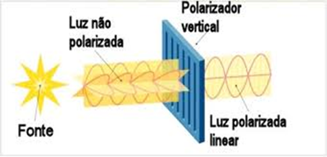
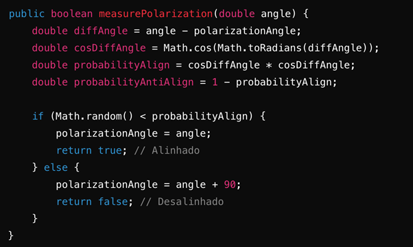

Superposição Quântica com um Simulador da polarização de fótons
Por que estou apresentando esse simulador em uma apresentação sobre POO?
Por que usamos a polarização de fótons?
Estamos usando a polarização de fótons no simulador porque o comportamento dos fótons se assemelha ao dos qubits.
Polarização de Fótons
Umfóton é uma partícula de luz. Pense na polarização como a inclinação de uma linha - ela pode estar alinhada em diferentes ângulos. Por exemplo, um fóton pode estar polarizado em 0°, 45°, 90°, e assim por diante. Polarização é uma propriedade que descreve a direção em que o campo elétrico do fóton oscila.
Superposição
Em termos simples, superposição é quando um qubit, que é a unidade básica de informação em um computador quântico, pode estar em múltiplos estados ao mesmo tempo. No caso de um bit clássico, ele pode ser 0 ou 1, mas um qubit pode ser uma combinação dos dois ao mesmo tempo, até que seja medido."
Como o Simulador Funciona:
No simulador, estamos medindo a polarização de um fóton para ver se ele está alinhado (representado portrue) ou desalinhado (representado por false) com um aparelho de medição. A função
measurePolarization() calcula a diferença de ângulo entre o fóton e o aparelho de medição.
Se a diferença de ângulo for grande, a probabilidade de o fóton estar desalinhado aumenta.
Se a diferença for pequena, a probabilidade de alinhamento aumenta.
Explicação do código:
Aqui no código, usamos a funçãoMath.cos() para calcular essa probabilidade com
base na diferença de ângulo. Quanto mais próximo o ângulo do fóton estiver do
aparelho de medição, maior a probabilidade de ele estar alinhado.

Explicação dos resultados:
Serodarmososimulador muitas vezes com o fóton em superposição (por exemplo, a 45° com relação a um aparelho de medição a 90°), veremos resultados probabilísticos. Isso significa que, às vezes, o fóton parecerá estar alinhado, e outras vezes desalinhado. A média desses resultados nos mostrará que o fóton está em uma combinação dos dois estados– exatamente o que chamamos de superposição.
Quandomedimosumfótonqueestá a 45°, estamos essencialmente 'forçando' ele a escolher um dos estados (alinhado ou desalinhado), mas antes dessa medição, ele estava em um estado misto, que chamamos de superposição.
Portanto, a polarização de fótons é uma maneira prática de ilustrar a superposição. Quando medimos um estado sobreposto, ele colapsa para um valor definido, assim como ocomportamento esperado em qubits em um computador quântico.
Relacionando Superposição com Autômatos
Introdução aos Autômatos e Superposição:
Agora vamos trazer uma relação entre a superposição quântica e os autômatos. Na computação clássica, temos autômatos finitos, que podem ser determinísticos ou não-determinísticos. Os autômatos determinísticos possuem um estado bem definido para cada transição, enquanto os autômatos não-determinísticos podem estar em múltiplos estados possíveis ao mesmo tempo.
Relacionando automatos com Superposição
Podemos pensar em um autômato quântico como um tipo de autômato não-determinístico, onde os qubits, ao invés de estarem em um único estado, podem estar em uma superposição de estados. Assim como em um autômato não-determinístico, onde várias transições podem ocorrer ao mesmo tempo, em um sistema quântico, o qubit pode estar em múltiplas combinações de 0 e 1 até que seja medido.
Ao medir o estado de um qubit, assim como em um autômato determinístico, ocorre o 'colapso', onde o qubit assume um estado definitivo, assim como o autômato clássico escolhe uma transição com base na entrada. No caso da computação quântica, essa transição é probabilística, mas segue o mesmo princípio.
Exemplo:
Por exemplo, quando medimos o estado de polarização de um fóton no simulador, estamos essencialmente fazendo uma transição de um estado de superposição (entre 0 e 1) para um estado determinado, da mesma forma que um autômato faz uma transição de estado baseada em entrada.
Com essa apresentação, mostrei como conceitos fundamentais da computação quântica, como superposição, podem ser simulados com código usando programação orientada a objetos. Além disso, vimos como a superposição pode ser relacionada a autômatos não-determinísticos, trazendo uma conexão entre a computação clássica e a quântica.
Referências:
Quantum computing: A new paradigm https://nap.nationalacademies.org/read/25196/chapter/4#27
IBM Quantum - (paradigma da computação quântica, superposição, emaranhamento) https://www.ibm.com/topics/quantum-computing
Autômato finito quântico: https://en.wikipedia.org/wiki/Quantum_finite_automaton
Quantum Information Theory – an Invitation: https://arxiv.org/pdf/quant-ph/0101061